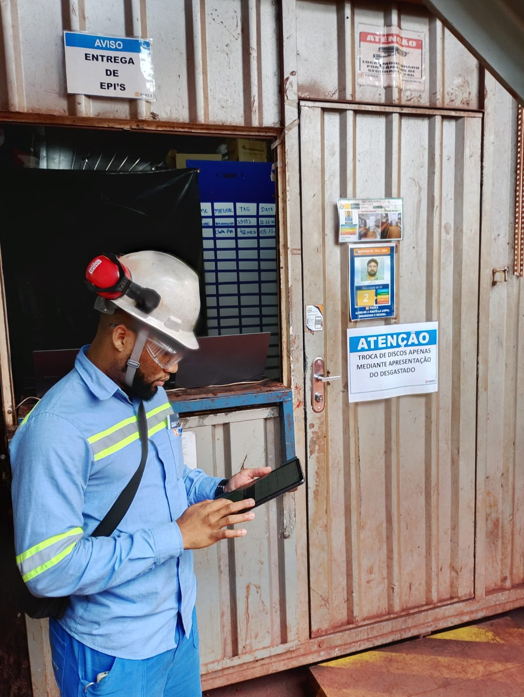
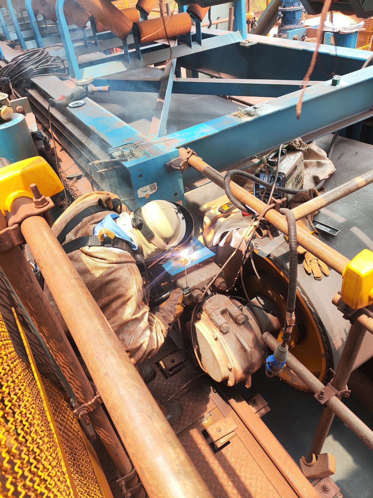
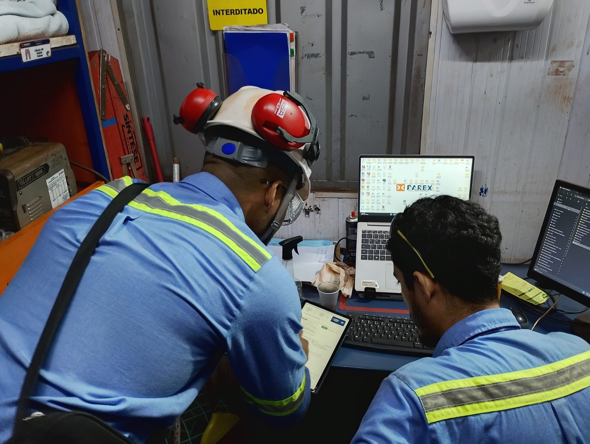
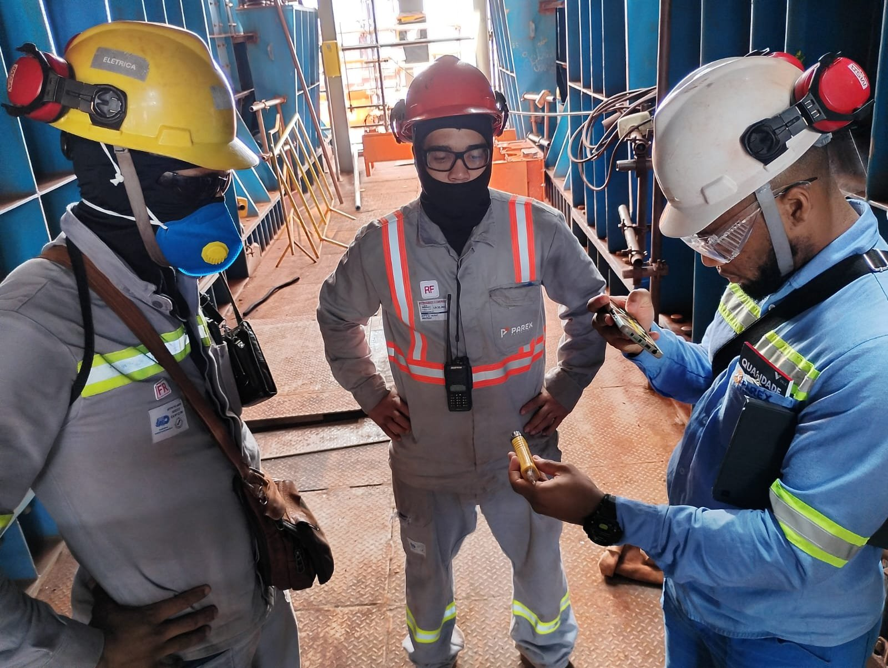

RELATÓRIO CONSOLIDADO DE AUDITORIA DE QUALIDADE
Almoxarifado, Frente de Serviço (Área), Rastreabilidade Metrológica e Matriz de Treinamentos (CONTROLE × MR-09-001 Rev. 09)




CÁLCULO DA NOTA ATINGIDA ATÉ O MOMENTO E ÍNDICES POR PILAR
Memória de cálculo rastreável das verificações realizadas em 24/11/2026 (Almoxarifado, Área, Sistema Metrológico e Matriz MR-09-001 Rev. 09)
1. AUDITORIA NO ALMOXARIFADO: DESVIOS E EVIDÊNCIAS DE ATUAÇÃO
Verificação das rotinas de controle, armazenamento e distribuição de equipamentos de medição e monitoramento
2.1. INSPEÇÃO DE SOLDAGEM E INSTRUMENTOS CALIBRADOS EM ÁREA (CONFORMES)
Verificação física de soldador qualificado (Sinete PR2-002), máquina de solda calibrada (TAG 24302) e trena analógica rastreada
2.2. DESVIOS E NÃO CONFORMIDADES IDENTIFICADOS EM FRENTE DE SERVIÇO
Uso de trena particular (3 m), Detector de Tensão vencido/avariados (DDT-00051) e 02 Esquadros sem TAG de identificação
3. VERIFICAÇÃO DOCUMENTAL E PONTOS DE ATENÇÃO NO SISTEMA
Conferência no sistema de gestão dos 4 itens amostrados (100% vigentes) e diagnóstico de 3 vulnerabilidades sistêmicas
4. DIAGNÓSTICO DOS 12 COLABORADORES (CONTROLE × MR-09-001 REV. 09)
Conformes: 1 colaborador (8,3%) • Não Conformes: 11 colaboradores (91,7%) • Índice por Item: 14,1% (10/71 itens)
CORRELAÇÃO CAUSA-EFEITO & REGISTROS DE INSPEÇÃO EM CAMPO
Evidência direta entre a ausência da equipe do Almoxarifado no Controle de Treinamentos e os desvios operacionais constatados
LEVANTAMENTO CONSOLIDADO DAS 7 DEFICIÊNCIAS E AÇÕES DE SANEAMENTO
Plano de ação obrigatório para fechamento das pendências antes da Auditoria SGI de 07 a 09/12/2026
VALIDAÇÃO FORMAL, CARIMBO E RUBRICA DO AUDITOR
Relatório Consolidado de Pré-Auditoria SGI • Projeto Adequação da Usina 1 — Vale (Parauapebas-PA)
PARECER TÉCNICO CONCLUSIVO DA AUDITORIA (24/11/2026):
Com base no Plano de Auditoria FO-08-031 Rev. 2, a avaliação consolidada do Almoxarifado, Frente de Serviço (Área), Rastreabilidade Metrológica e Matriz de Treinamentos (CONTROLE DE TREINAMENTO × MR-09-001 Rev. 09) resultou na Nota Global de 27,8% (sendo 40,0% de conformidade nas verificações físicas/metrológicas, 100,0% de validade nos 4 itens da amostragem documental no sistema e 14,1% de conformidade por item de treinamento na amostra de 12 colaboradores). Todas as evidências fotográficas e documentais encontram-se registradas e rastreáveis neste relatório para tratativa imediata das lideranças responsáveis.